Training run: offline rebuild of the dashboard plots
Built from the local logs of the packed1-500m-deep run (trainer stdout, metrics file, W&B transaction log)
by experiments/plot_training_run.py. Nothing was re-synced to W&B. Figures are static PNGs.
Restart and failure markers are thin vertical lines on the step plots.
Final summary
| Steps logged (last step) | 17,542 |
|---|---|
| Tokens seen | 10,346,692,608 (10.35 B) |
| Training time (progress/train_hours) | 152.17 h |
| Final train loss (last step) | 2.4882 |
| Train loss, mean of last 100 steps | 2.4138 |
| Final eval loss (n-gram on) | 2.3922 |
| Final eval perplexity | 10.938 |
| Eval loss without n-gram | 3.0032 |
| N-gram gain (nats/token) | 0.6109 |
| Early-exit eval loss | 4.0702 |
| Mean MFU (excluding step 1) | 0.2762 |
| Tokens per second, mean (results.jsonl) | 18,906 |
| Median seconds per step (excluding step 1) | 30.95 |
Eval passes (table view of every eval point)
| Step | Kind | Eval loss | Perplexity | Loss, n-gram off | N-gram gain | Early-exit loss | Table RMS |
|---|---|---|---|---|---|---|---|
| 3,508 | scheduled | 2.8269 | 16.893 | 3.3928 | 0.5659 | 3.7064 | 0.4169 |
| 7,016 | scheduled | 2.6796 | 14.579 | 3.2712 | 0.5916 | 3.6986 | 0.5149 |
| 10,524 | scheduled | 2.6107 | 13.609 | 3.2123 | 0.6016 | 3.7819 | 0.5941 |
| 14,032 | scheduled | 2.4824 | 11.970 | 3.0982 | 0.6158 | 3.9301 | 0.6437 |
| 17,540 | scheduled | 2.3922 | 10.938 | 3.0032 | 0.6109 | 4.0702 | 0.6477 |
| 17,542 | final | 2.3922 | 10.938 | 3.0032 | 0.6109 | 4.0702 | 0.6477 |
Restarts and failures found in the logs
- crashed before any step: launch 1 started 2026-10-27 13:07:56 UTC (trainer log line 1); exit code 1; steps logged 0; traceback at line 19:
ValueError: Expect query and key/value to have the same number of heads but got Hq=6 and Hkv=2. Try setting enable_gqa=True for GQA. - crashed before any step: launch 2 started 2026-10-27 13:10:13 UTC (trainer log line 56); exit code 1; steps logged 0; traceback at line 74:
ValueError: Expect query and key/value to have the same number of heads but got Hq=6 and Hkv=2. Try setting enable_gqa=True for GQA. - crashed before any step: launch 3 started 2026-10-27 13:11:12 UTC (trainer log line 111); no exit line; the supervisor then gave up (log line 165); steps logged 0; traceback at line 129:
ValueError: Expect query and key/value to have the same number of heads but got Hq=6 and Hkv=2. Try setting enable_gqa=True for GQA. - completed all steps: launch 4 started 2026-10-27 14:04:43 UTC (trainer log line 166); steps logged 17542; steps 1 to 17,542
W&B online sync: fatal error after step 9,434 (train log line 9721); filestream returned 403 Forbidden. The local transaction log was still written.
Figures
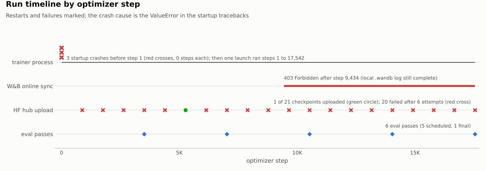
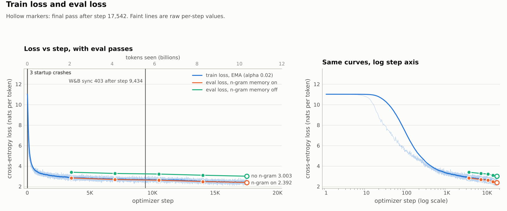
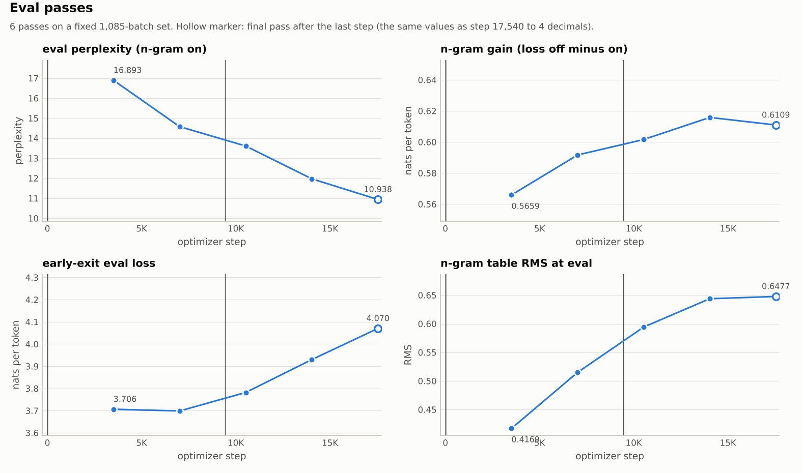
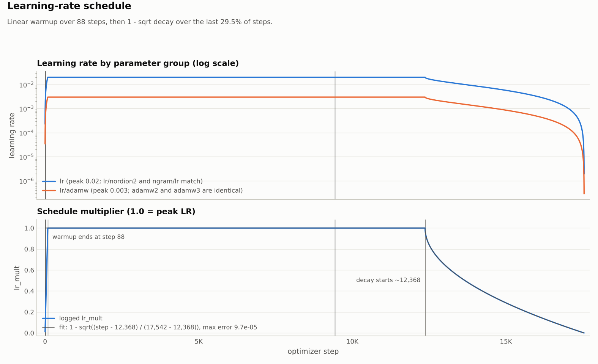
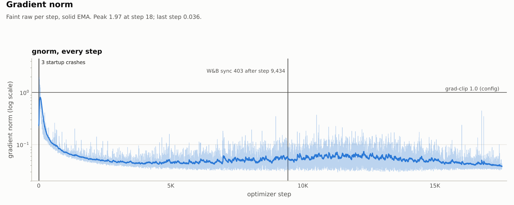
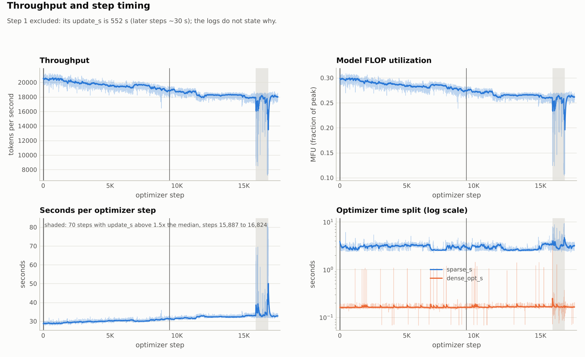
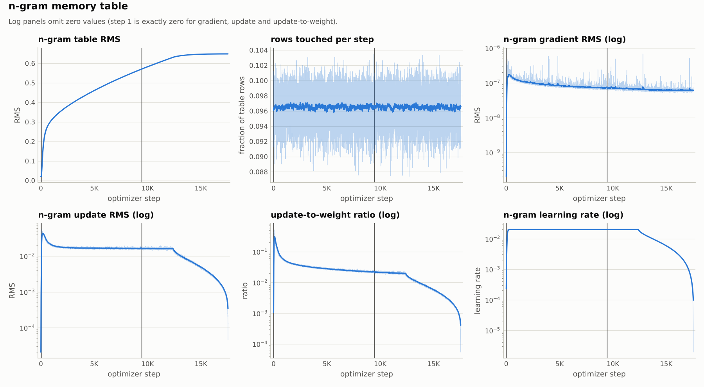
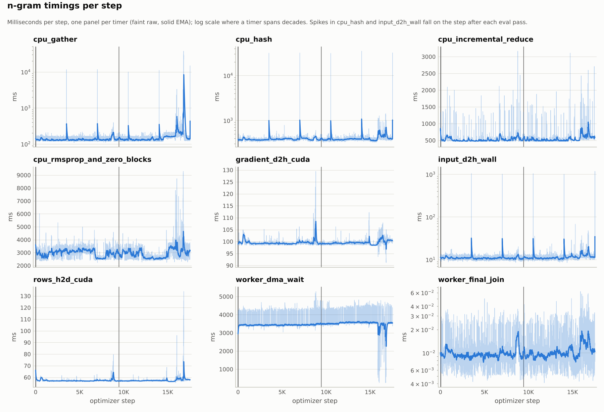
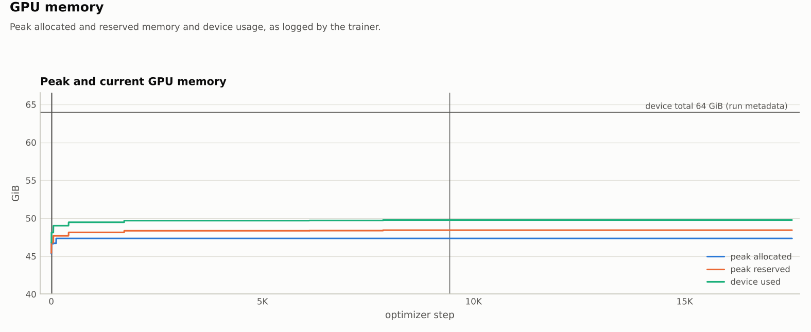
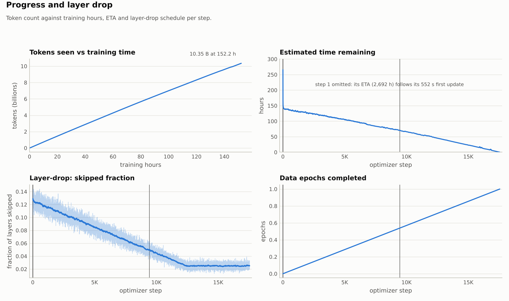
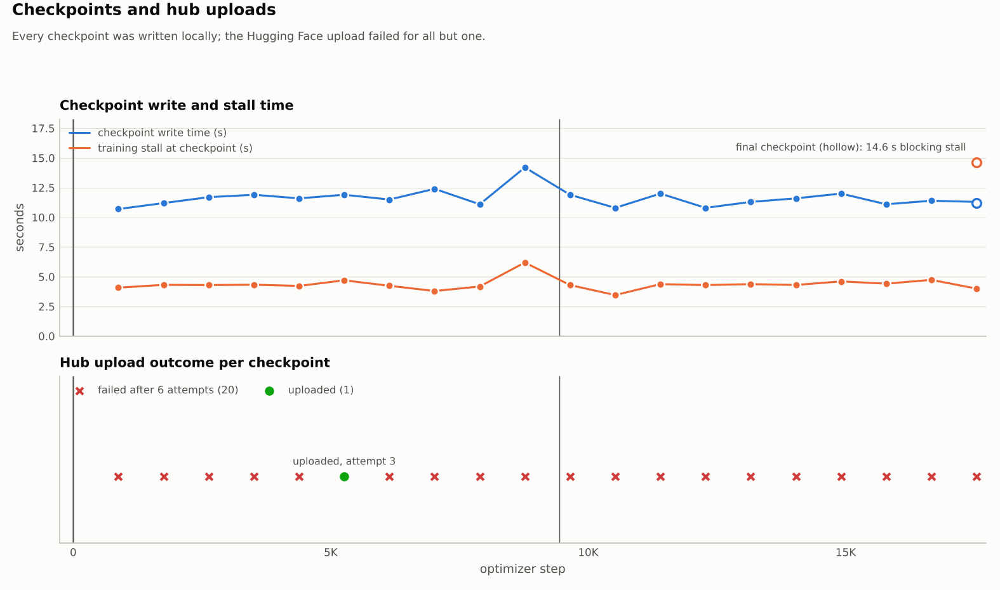
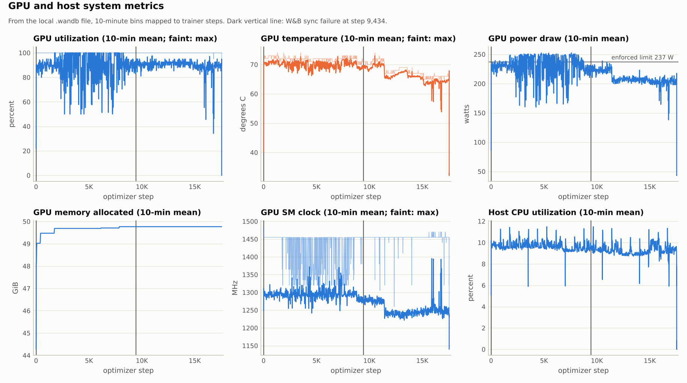